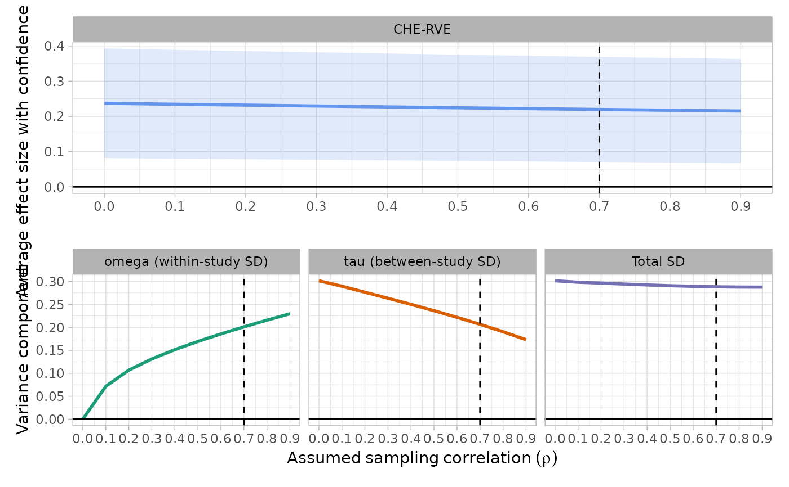

Plotting the impact of the assumed sampling correlation on the overall average effect size estimate
Source:R/rho_impact.R
plot_rho_impact.RdCreates a plot showing the impact on the assumed sampling correlation (\(\rho\)) on the overall average effect size and the variance estimation.
Usage
plot_rho_impact(
data,
rho_used,
prediction_interval = FALSE,
ylab_beta = NULL,
var_breaks = NULL
)Arguments
- data
Data/object for which the plot should be made.
- rho_used
Numerical value indicating the (assumed) sampling correlation used to fit the main CHE-RVE model.
- prediction_interval
Logical indicting whether a plot showing the impact of the sampling correlation on the prediction interval estimation.
- ylab_beta
Optional character with the y-axis label for the overall mean effect plot
- var_breaks
Optional vector setting the y-axis breaks for the variance plot.
References
Pustejovsky, J. E., & Tipton, E. (2021). Meta-analysis with robust variance estimation: Expanding the range of working models. Prevention Science, 23(1), 425–438. doi:10.1007/s11121-021-01246-3
Examples
Diet_dat <- Dietrichson2021_data |> dplyr::mutate(vg = SE_g^2)
map_rho_impact(
data = head(Diet_dat, 100),
yi = Effectsize_g,
vi = vg,
studyid = Study_ID
) |>
plot_rho_impact(rho_used = 0.7, var_breaks = seq(0, 0.35, 0.05))
